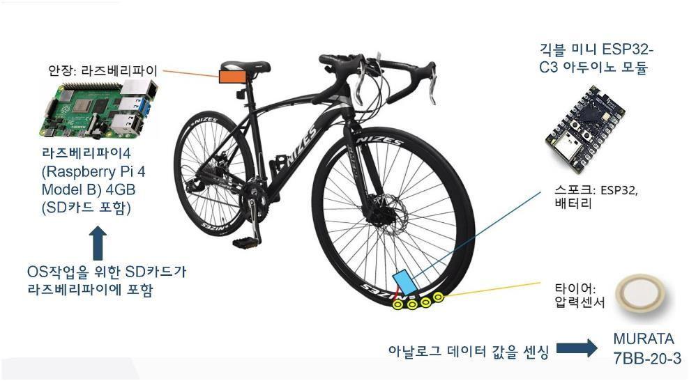
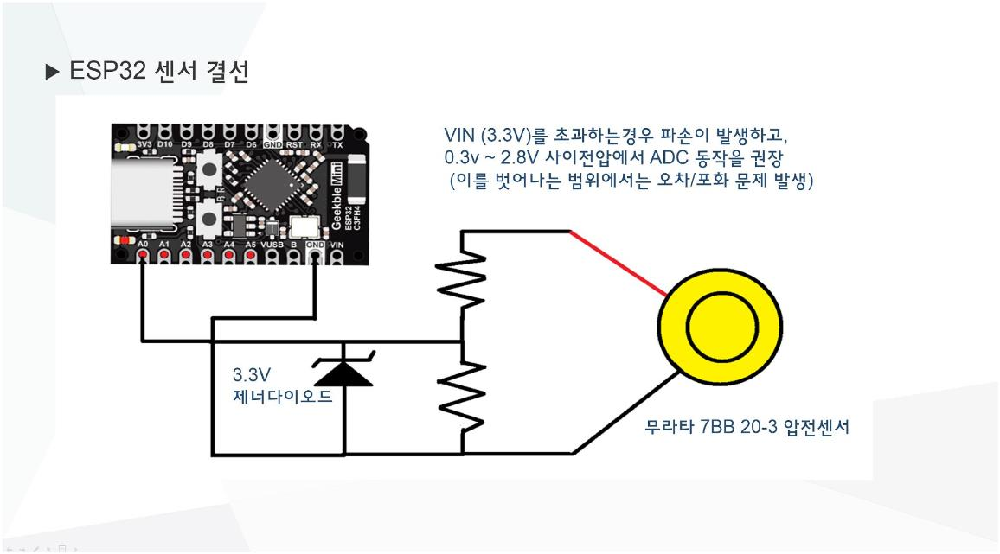

프로젝트 개요
스마트 타이어 프로젝트는 차량 타이어의 상태를 실시간으로 모니터링하여 안전성을 높이기 위해 시작되었습니다. 압전 소자 센서를 활용하여 타이어의 진동과 압력 변화를 감지하고, 이를 기반으로 타이어 상태를 분석하여 스마트폰 앱으로 알림을 제공하는 것이 목적입니다.

메인 아이디어
압전 센서를 이용하여 타이어 상태를 실시간으로 모니터링하고, 수집된 데이터를 무선으로 서버에 전송합니다. 이 데이터를 머신러닝을 통해 분석하여 스마트폰 앱으로 알림을 제공하는 시스템입니다. 주요 하드웨어로는 Murata 7BB-20-3 압전 센서, Raspberry Pi 4, ESP32-C3 Arduino 모듈이 사용되었습니다.
이 시스템은 타이어 마모 및 이상 진동을 조기에 감지하여 사고를 예방하고, 사용자가 타이어 상태를 쉽게 모니터링할 수 있도록 지원합니다.
하드웨어 구성
하드웨어 구성 상세:
- ESP32: 센서 데이터 수집 및 전처리
- Raspberry Pi 4: 데이터 분석 및 시각화
- Murata 7BB-20-3: 압력과 진동 감지
- TP4056 충전 모듈: 리튬 폴리머 배터리 충전 관리
ESP32
ESP32는 센서 데이터를 수집하고...
라즈베리파이
라즈베리파이는 데이터 분석과...

소프트웨어 및 데이터 처리
ESP32는 압전 센서로부터 데이터를 수집하고, 이를 전처리하여 MQTT 프로토콜을 통해 서버로 전송합니다. 서버에서는 머신러닝 모델을 사용하여 타이어 상태를 분석하고, 결과를 사용자에게 시각적으로 제공하는 시스템입니다.
주요 소프트웨어 기능:
- 데이터 수집: 압전 센서로부터 실시간 데이터 수집
- 데이터 전처리: 필터링 및 노이즈 제거
- 데이터 전송: MQTT 프로토콜을 사용하여 서버에 전송
- 데이터 분석: 머신러닝 모델을 사용하여 타이어 상태 진단
데이터 수집
센서로 부터 데이터를 수집...

데이터 전처리
수집된 데이터는 노이즈 제거와 정규화 과정을 거칩니다...

데이터 전송
MQTT 프로토콜을 사용하여 데이터를 서버로 전송합니다...

데이터 분석
서버에서 머신러닝 모델을 통해 타이어 상태를 분석합니다...

앱 개발
Flutter를 사용하여 앱을 개발 중입니다...

단계별 진행 계획
프로젝트는 다음과 같은 단계로 진행합니다:
- 기획 및 설계: 프로젝트 방향 설정 및 하드웨어, 소프트웨어 설계
- 하드웨어 프로토타입 구축: 센서 연결 및 초기 테스트
- 데이터 수집 및 분석: 실시간 데이터 수집과 초기 분석
- 머신러닝 모델 설계 및 앱 개발: 모델 학습 및 테스트, 앱 통합
- 통합 및 테스트: 시스템 최적화 및 최종 테스트